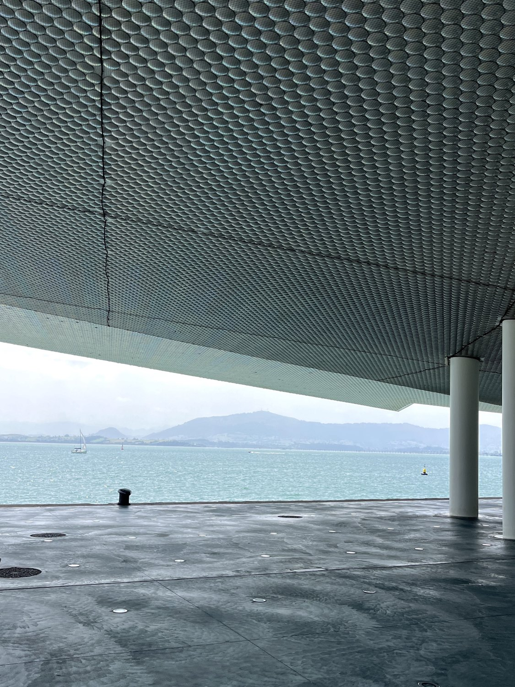
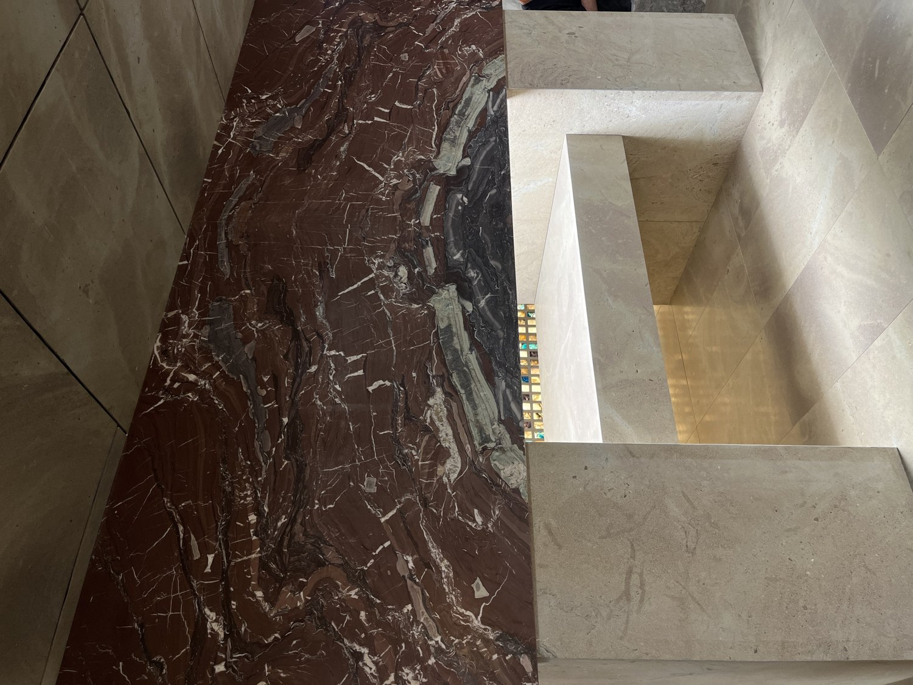
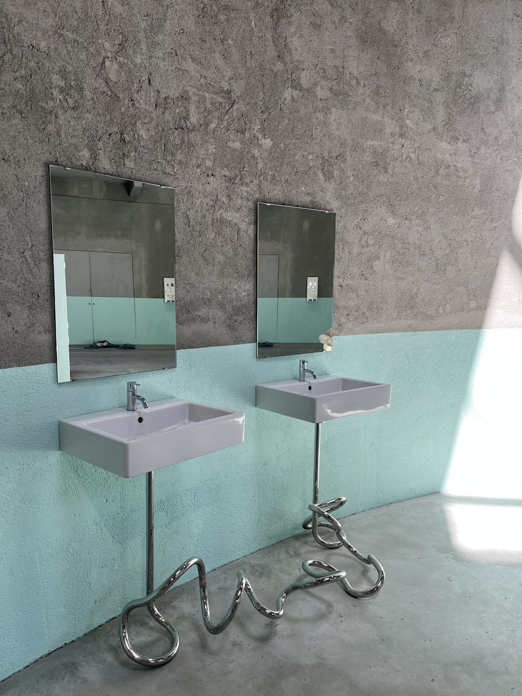
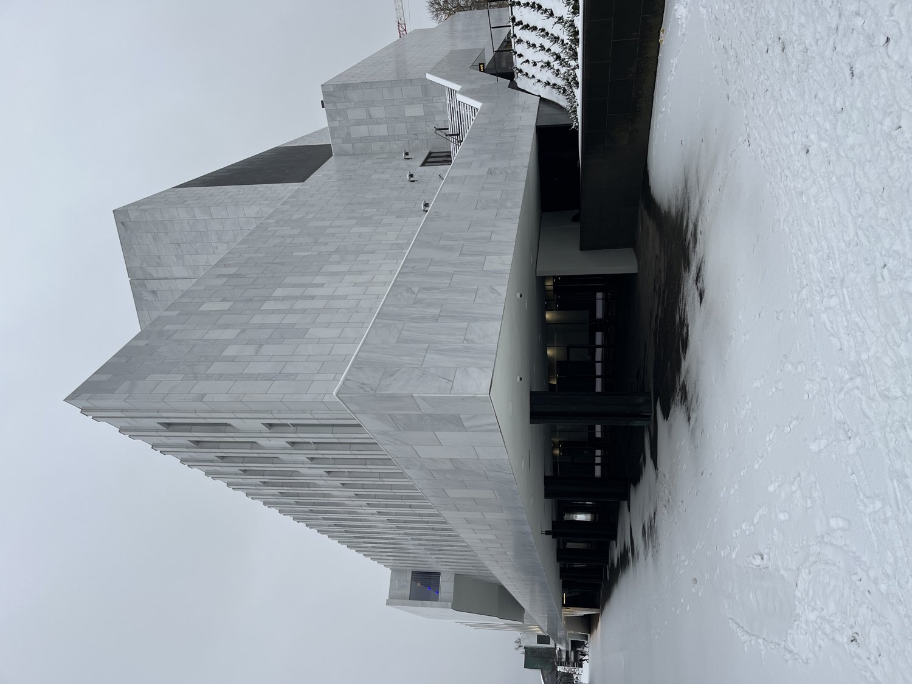
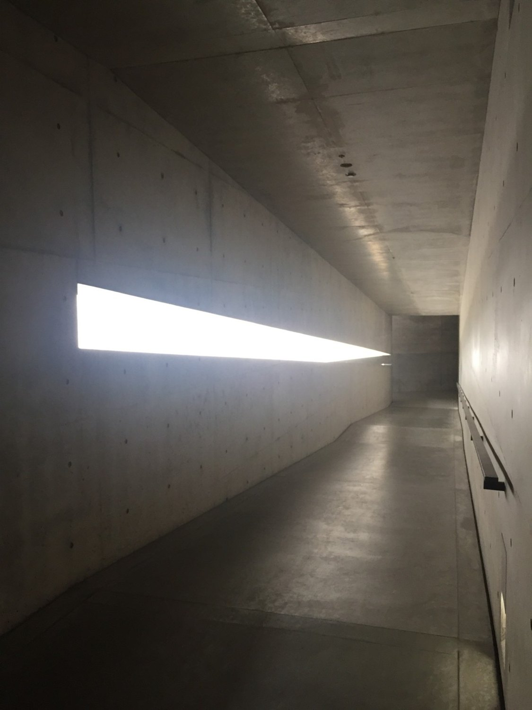
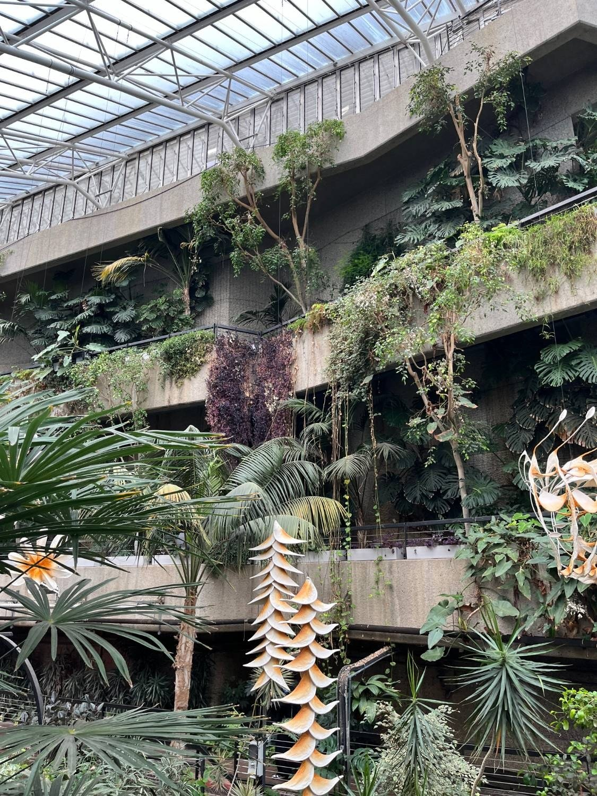
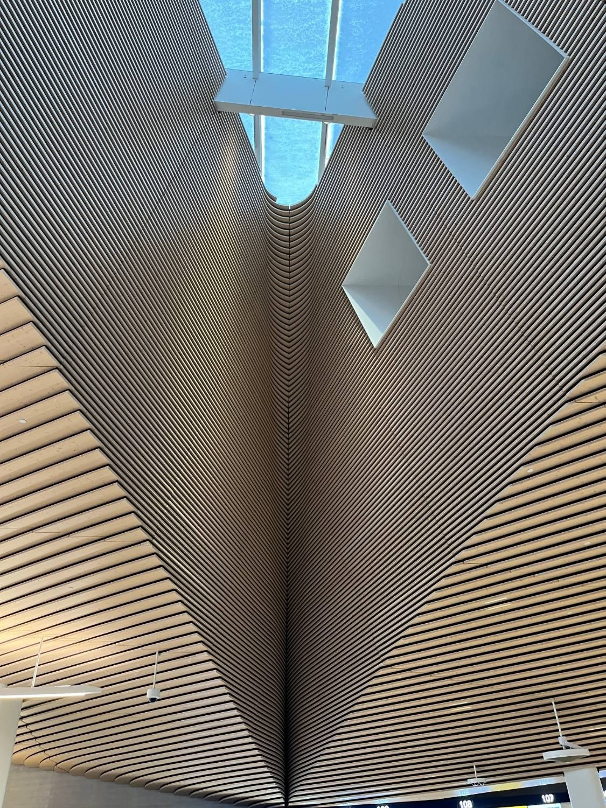
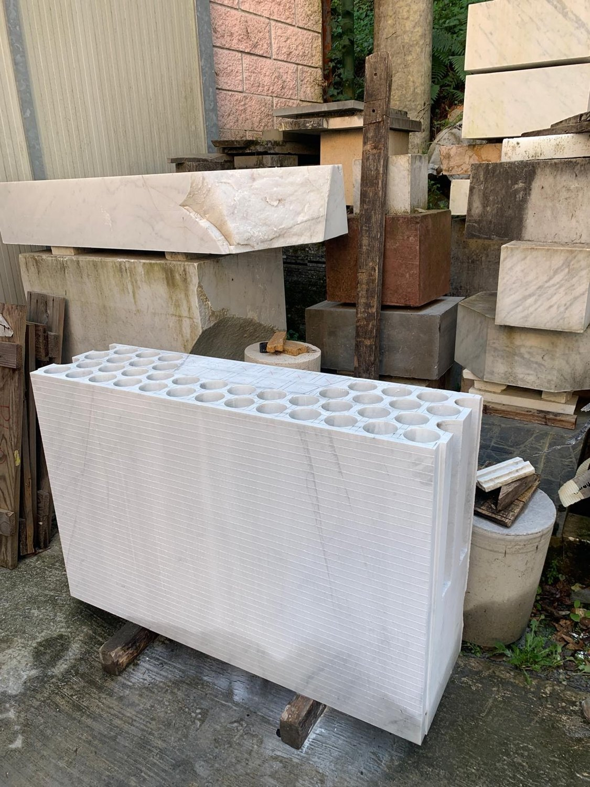
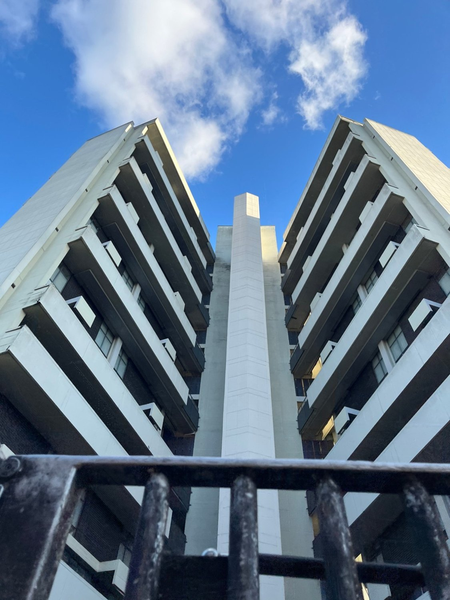
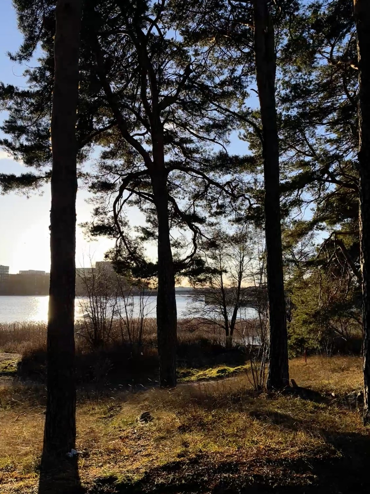

Beneath the Botín
View photo
01 / 10
Petrus
An atelier by Pietro Sacchelli. Between architecture, materials and systems: how an idea becomes something built, and how well it is seen, specified and delivered along the way.
AboutHow the brands connect
A multidisciplinary practice.
Architecture
Design
Interiors
Construction
Software for stone and joinery
Keystone
One system for quotes, projects and finance, from the first enquiry to the final snag. Built for stone and joinery companies, and suited to designers and developers too.
Visit KeystonePhotography archive
PS Gallery
Architecture through observation. Composition, geometry, light, texture and spatial relationships, from different cities and countries.
Visit PS Gallery